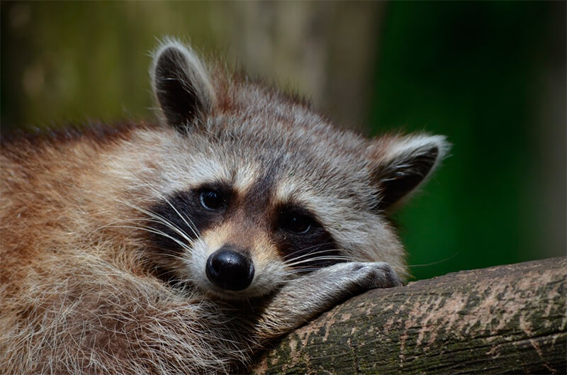

MAPACHE
Nombre cientifico:
Sciurus vulgaris

Su hábitat comprende lugares con árboles, cercanos a algún depósito de agua o curso,
o manglares costeros; es una especie que se ha adaptado perfectamente a zonas urbanas.
Los mapaches están adaptados para comer basura y otras comidas disponibles en áreas suburbanas y urbanas.
Actitud: Los mapaches son nocturnos, pero ocasionalmente pueden ser vistos durante las horas del día.
Son unos animales solitarios y el único grupo social que forman es nomás la madre y sus hijos.
- Los mapaches son muy escaladores ágiles.
- Son la presa de predadores como coyotes, lobos, halcones, y búhos.
- Usualmente son animales nocturnos y por eso raramente son vistos durante el día.
- Los mapaches tienen visión excelentepor la noche.
- Su peso medio es de siete a ocho kilogramos, pero ha llegado a alcanzar los 28 kilogramos.
Pagina Principal